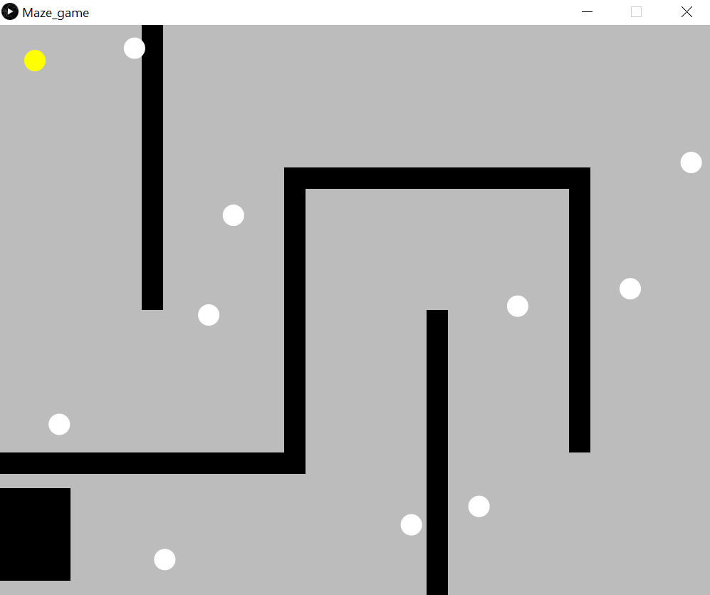

Lucy NguyenMy name is Lucy, I studied Mathematics, Computer Science and Physics for A Levels at Woodhouse College. I am now studying Computer Science at City, University of London. In this coding bootcamp, I have learnt that Processing can be used for displaying data and for creating art using shapes or text. |
|
|
|
|
Bootcamp 2020: Maze GameFor my project, I have chosen to create a maze game. The aim of the game is to get to the end of the maze without touching the bouncing balls. I started off by using classes for the player, the balls and the walls of the maze. I used methods to draw and display the objects on the screen and arrays to store the objects such as the balls and the walls. Thank you for checking out my project and I hope you enjoy the game. :) Check out the code on Github: https://github.com/lucy-ng/adbt001 | |
|  | |
Toast RunFor this project, I have created a platform game with features such as saving and loading and changing the volume of the music. The aim of the game is to collect the key to go to the next level. I have learnt how to read and write text files in Java and use the JFrame and JPanel class to create the game view and the menu of the game. Some of the challenges that I have faced during this project would be implementing the save and load features of the game. |
|